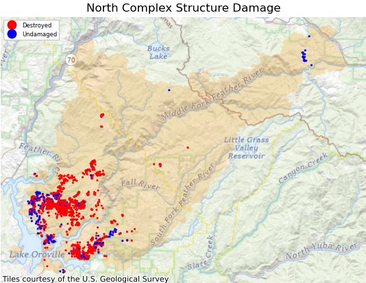
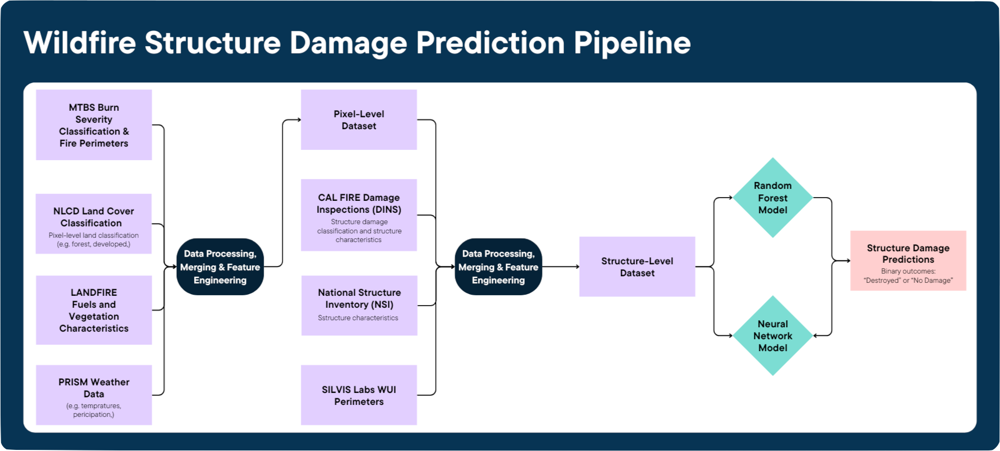

Our prediction target is a binary structure damage outcome derived from CAL FIRE Damage Inspection (DINS) reports. We retain only residential structures classified as Destroyed (>50%) or No Damage to focus on clearly defined damage states.
Wildfire Severity and Structural Damage Prediction in Wildland-Urban Interface (WUI) Areas
Understanding and predicting wildfire impacts on residential structures in Wildland-Urban Interface (WUI) areas.
Overview
Why This Matters
Wildfires in California are becoming more frequent and more destructive, especially in Wildland-Urban Interface (WUI) areas, where homes meet wildland vegetation.
Yet after major wildfire events, residents, planners, and insurers are often left asking the same question:
Why did some homes burn while others survived?
Despite growing wildfire risk, publicly accessible tools that assess damage at the individual structure level remain limited.

What We're Doing
In this project, we develop models to predict whether a residential structure will be destroyed or experience no damage during a wildfire event in California.
Using publicly available structural, environmental, and spatial data, we train both Random Forest and Neural Network models to identify patterns associated with destruction.
Our goal is to provide insights that can support:
- risk assessment
- community preparedness
- safer planning in WUI areas
Our Approach
To understand why some homes are destroyed while others survive, we combine multiple public datasets that describe wildfire severity, environmental conditions, and structural characteristics. We transform these data into structure-level features and train machine learning models to predict damage outcomes.

Flowchart showcasing high-level overview of how multi-source data is merged and engineered to generate structure-level wildfire damage predictions.
Data
Prediction Target
Damage & Structural Attributes
To capture structural characteristics that may influence damage outcomes, we integrate:
- CAL FIRE Damage Inspection (DINS) — structure damage classification and structure attributes such as construction materials.
- National Structure Inventory (NSI) — building characteristics such as square footage, number of stories, foundation type, and structural value
Environmental & Fire Severity Features
We constructed a merged pixel-level fire severity dataset integrating:
- Monitoring Trends in Burn Severity (MTBS) — burn severity classifications
- LANDFIRE — fuels and vegetation characteristics
- National Land Cover Database (NLCD) — land cover classification
- PRISM — temperature and precipitation data
These datasets were integrated into a unified fire severity dataset during our Q1 project.
Spatial Perimeters
To capture the spatial context of structures within WUI areas, we incorporate:
- SILVIS Labs WUI dataset — Wildland-Urban Interface classifications and perimeters
- MTBS wildfire perimeters — fire boundary data
Data Processing & Feature Engineering
To construct a dataset ready for modeling, we performed three major processing steps: cleaning and standardization, spatial integration, and final feature engineering.
Cleaning & Standardization
We filtered the DINS dataset to include only residential structures classified as Destroyed (>50%) or No Damage. Column names were standardized, invalid entries were converted to missing values, and columns with excessive missingness were removed.
All spatial datasets were reprojected into a consistent coordinate system to ensure accurate spatial joins.
Spatial Integration
We restricted our analysis to structures located within Wildland-Urban Interface (WUI) areas by clipping SILVIS WUI data to selected wildfire perimeters.
Structures were spatially joined to fire severity data using a 30-meter buffer to capture localized burn conditions. Additional building characteristics were incorporated using nearest-neighbor spatial matching with the NSI dataset.
Final Feature Engineering
Missing categorical variables were imputed using an “Unknown” category, and all categorical features were one-hot encoded.
Structural and environmental variables were combined into a unified dataset, and the damage outcome was encoded as a binary target variable (1 for Destroyed, 0 for No Damage).
The resulting dataset contains structure-level environmental and structural features, with a binary target variable indicating whether each structure was destroyed or experienced no damage during a wildfire.
Structural Damage Model
We trained two models, Random Forest and Neural Network, to predict whether a residential structure would be Destroyed (>50%) or experience No Damage during a wildfire. Using two different modeling approaches allows us to compare performance and identify key predictive features across methods.
All cross-validation was grouped at the wildfire level to prevent data leakage between training and validation folds.
Random Forest Model
The Random Forest model serves as a strong tree-based model capable of capturing nonlinear relationships between structural and environmental variables.
Hyperparameters were tuned using randomized search with grouped cross-validation, including parameters such as maximum tree depth and minimum samples per leaf.
After selecting the best performing model, we performed threshold tuning on the validation set to find the threshold that would maximize the validation F1 score. Then the final model was tested on the test set, and performance metrics were calculated.
Neural Network Model
A feedforward neural network was trained to capture complex interactions between structural and environmental variables.
To reduce noise and improve model performance, we performed feature selection using a LightGBM model and retained features contributing to the top 95% cumulative importance.
Hyperparameters were selected using a grid search over a chosen number of neurons per layer, dropout rate, learning rate, and regularization rate, with cross-validation and early stopping based on validation metrics.
The best hyperparameters were then run on the test set with early stopping, resulting in the final neural network model used to create performance metrics.
Evaluation Metrics
Due to class imbalance, we optimized Precision-Recall AUC (PR-AUC) during cross-validation and used validation-based probability threshold tuning.
Final model performance was evaluated using Accuracy, Precision, Recall, and F1-score.
Using the final trained models, we generated:
- Model performance metrics and confusion matrices
- Feature importance analysis using SHAP
- Fire-level structural loss reports
- Fire-level damage map visualizations (actual outcome, predicted outcome, and predicted probability)
Results
To be added (including visualizations, performance metrics, and feature importance analysis)
Interpretation & Discussion
To be added
Conclusion
To be added